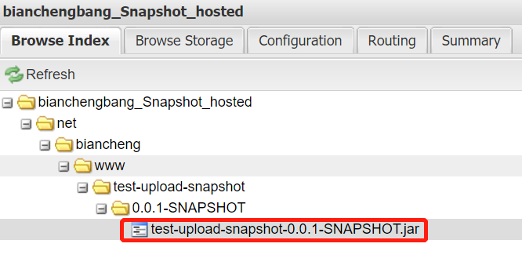
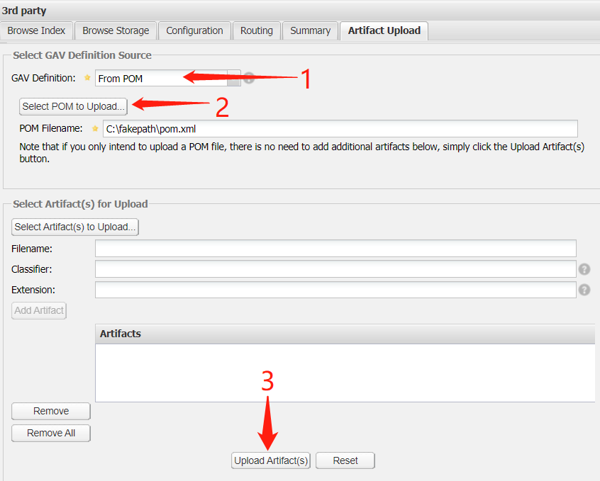
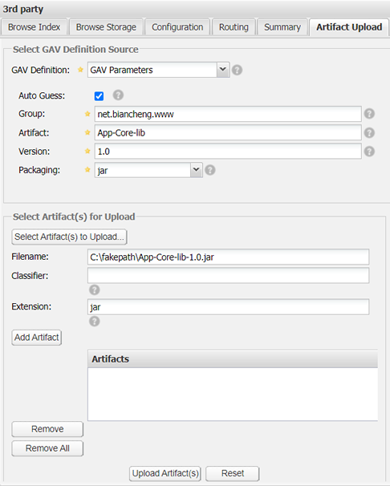
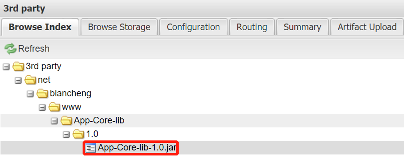

部署构件到Nexus
如果仅仅是为了代理远程的公共仓库，那么 Nexus 的代理仓库就完全能够满足需要，但是我们知道，Nexus 除了代理仓库外，还有另一种仓库：宿主仓库。
宿主仓库的主要作用是存储公司或组织内部的构件，以及一些无法从公共仓库获取的第三方构件（JDBC 驱动），供用户下载使用。用户可以通过配置 Maven 将构件自动部署到 Nexus 宿主仓库，也可以在 Nexus 界面手动上传构件。
使用 Maven 将构件部署到 Nexus 宿主仓库中主要分为 3 步：
以上配置说明如下：
注意：以上配置中，server 元素中的 id 必须和 pom.xml 中 distributionManagement 元素对应仓库的 id 保持一致。Maven 在部署构件时，会先根据 id 查找用户名称和密码进行认证和登录，然后将构件部署到对应得宿主仓库。
1）打开命令行窗口，跳转到 test-upload-snapshot 项目得目录下，执行如下 Maven 命令。
2) Maven 命令执行结果如下图。
我们还是以 Maven 项目 App-Core-lib 为例，将其打包后手动上传到 Nexus 内置宿主仓库 3rd party 中，具体步骤如下。
1. 打开命令行窗口，跳转到 App-Core-lib 的目录下，执行如下 mvn 命令，对项目进行打包。
2.打包完成后，进入 App-Core-lib\target 目录，可以看到 Maven 已经将该项目打包成了一个 jar 文件，如图 2 所示。

3. 在 Nexus 界面的仓库列表中选择 3rd party 仓库，在下方选择 Artifact Upload 选项卡，其中 GAV Definition 用于定义上传构件的坐标信息。
GAV Definition 中提供了两种定义构件坐标的方式：
以上 2 种方式操作时会略有不同，下面我们分别对它们进行介绍。
定义好坐标后，点击 Select Artifact(s) to Upload... 按钮选择要上传的构件，然后点击 Add Artifact 按钮将其加入上传列表中。最后点击页面最下方的 Upload Artifact(s) 按钮，将构件上传到仓库中，如图 4 所示。
4. 在仓库列表中选中 3rd party 宿主仓库，在下方的 Browse Index 选项卡中，可以看到构件已经被部署到该仓库中，如图 5 所示。
宿主仓库的主要作用是存储公司或组织内部的构件，以及一些无法从公共仓库获取的第三方构件（JDBC 驱动），供用户下载使用。用户可以通过配置 Maven 将构件自动部署到 Nexus 宿主仓库，也可以在 Nexus 界面手动上传构件。
使用 Maven 部署构件到 Nexus
日常开发中，快照版本构件可以直接部署到 Nexus 中策略为 Snapshot 的宿主仓库中，而最终发布的版本则应该部署到 Nexus 中策略为 Release 的宿主仓库中。使用 Maven 将构件部署到 Nexus 宿主仓库中主要分为 3 步：
- 配置项目的 POM 文件。
- 在 setting.xml 中配置认证信息。
- 使用 mvn 命令部署构件。
下面我们通过一个实例来详细介绍如何使用 Maven 部署构件到 Nexus 宿主仓库。
1. 配置项目的 POM 文件
创建一个名为 test-upload-snapshot 的 Maven 项目，并在其 POM 文件中添加如下配置。
<project>
...
<distributionManagement>
<repository>
<id>bianchengbang_Release_hosted</id>
<url>http://localhost:8082/nexus/content/repositories/bianchengbang_Release_hosted/</url>
</repository>
<snapshotRepository>
<id>bianchengbang_Snapshot_hosted</id>
<url>http://localhost:8082/nexus/content/repositories/bianchengbang_Snapshot_hosted/</url>
</snapshotRepository>
</distributionManagement>
</project>
以上配置说明如下：
- distributionManagement 元素：负责将指定的构件部署到 Nexus 指定的仓库中。
- repository 元素：distributionManagement 的子元素，用于定义部署 Release 版本的构件被部署的仓库。它有 2 子元素：id 和 url ，其中 id 为 Nexus 仓库的唯一标识，url 为 Nexus 宿主仓库的 url。
- snapshotRepository 元素：distributionManagement 的子元素，用于定义部署 Snapshot 版本的构件被部署的仓库。它也有 2 子元素：id 和 url ，且与 repository 中含义一致。
在 setting.xml 中配置认证信息
最初版本的 Nexus 没有为宿主仓库提供任何的安全措施。如果宿主仓库开启了部署功能，任何人可以连接并部署构件至这个仓库，这显然是极不安全的。因此，现在的 Nexus 中增加了权限认证，Nexus 对于匿名用户是只读的，若想部署构件到 Nexus 中，则需要在 setting.xml 中配置如下认证信息。
<settings>
...
<servers>
<server>
<id>bianchengbang_Release_hosted</id>
<username>admin</username>
<password>admin123</password>
</server>
<server>
<id>bianchengbang_Snapshot_hosted</id>
<username>admin</username>
<password>admin123</password>
</server>
</servers>
</settings>
注意：以上配置中，server 元素中的 id 必须和 pom.xml 中 distributionManagement 元素对应仓库的 id 保持一致。Maven 在部署构件时，会先根据 id 查找用户名称和密码进行认证和登录，然后将构件部署到对应得宿主仓库。
3. 使用 mvn 命令部署构件
完成以上配置之后，就可以使用 Maven 命令将构件部署到宿主仓库了，操作步骤如下。1）打开命令行窗口，跳转到 test-upload-snapshot 项目得目录下，执行如下 Maven 命令。
mvn clean deploy
2) Maven 命令执行结果如下图。
[INFO] Scanning for projects... [INFO] [INFO] ---------------< net.biancheng.www:test-upload-snapshot >--------------- [INFO] Building test-upload-snapshot 0.0.1-SNAPSHOT [INFO] --------------------------------[ jar ]--------------------------------- [INFO] [INFO] --- maven-clean-plugin:2.5:clean (default-clean) @ test-upload-snapshot --- [INFO] Deleting D:\eclipse workSpace 3\test-upload-snapshot\target [INFO] [INFO] --- maven-resources-plugin:2.6:resources (default-resources) @ test-upload-snapshot --- [INFO] Using 'UTF-8' encoding to copy filtered resources. [INFO] Copying 0 resource [INFO] [INFO] --- maven-compiler-plugin:3.1:compile (default-compile) @ test-upload-snapshot --- [INFO] Nothing to compile - all classes are up to date [INFO] [INFO] --- maven-resources-plugin:2.6:testResources (default-testResources) @ test-upload-snapshot --- [INFO] Using 'UTF-8' encoding to copy filtered resources. [INFO] Copying 0 resource [INFO] [INFO] --- maven-compiler-plugin:3.1:testCompile (default-testCompile) @ test-upload-snapshot --- [INFO] Nothing to compile - all classes are up to date [INFO] [INFO] --- maven-surefire-plugin:2.12.4:test (default-test) @ test-upload-snapshot --- [INFO] [INFO] --- maven-jar-plugin:2.4:jar (default-jar) @ test-upload-snapshot --- [INFO] Building jar: D:\eclipse workSpace 3\test-upload-snapshot\target\test-upload-snapshot-0.0.1-SNAPSHOT.jar [INFO] [INFO] --- maven-install-plugin:2.4:install (default-install) @ test-upload-snapshot --- [INFO] Installing D:\eclipse workSpace 3\test-upload-snapshot\target\test-upload-snapshot-0.0.1-SNAPSHOT.jar to D:\myRep ository\repository\net\biancheng\www\test-upload-snapshot\0.0.1-SNAPSHOT\test-upload-snapshot-0.0.1-SNAPSHOT.jar [INFO] Installing D:\eclipse workSpace 3\test-upload-snapshot\pom.xml to D:\myRepository\repository\net\biancheng\www\te st-upload-snapshot\0.0.1-SNAPSHOT\test-upload-snapshot-0.0.1-SNAPSHOT.pom [INFO] [INFO] --- maven-deploy-plugin:2.7:deploy (default-deploy) @ test-upload-snapshot --- Downloading from bianchengbang_Snapshot_hosted: http://localhost:8082/nexus/content/repositories/bianchengbang_Snapshot_ hosted/net/biancheng/www/test-upload-snapshot/0.0.1-SNAPSHOT/maven-metadata.xml Downloaded from bianchengbang_Snapshot_hosted: http://localhost:8082/nexus/content/repositories/bianchengbang_Snapshot_h osted/net/biancheng/www/test-upload-snapshot/0.0.1-SNAPSHOT/maven-metadata.xml (787 B at 9.2 kB/s) Uploading to bianchengbang_Snapshot_hosted: http://localhost:8082/nexus/content/repositories/bianchengbang_Snapshot_host ed/net/biancheng/www/test-upload-snapshot/0.0.1-SNAPSHOT/test-upload-snapshot-0.0.1-20210322.030343-5.jar Uploaded to bianchengbang_Snapshot_hosted: http://localhost:8082/nexus/content/repositories/bianchengbang_Snapshot_hoste d/net/biancheng/www/test-upload-snapshot/0.0.1-SNAPSHOT/test-upload-snapshot-0.0.1-20210322.030343-5.jar (2.1 kB at 28 k B/s) Uploading to bianchengbang_Snapshot_hosted: http://localhost:8082/nexus/content/repositories/bianchengbang_Snapshot_host ed/net/biancheng/www/test-upload-snapshot/0.0.1-SNAPSHOT/test-upload-snapshot-0.0.1-20210322.030343-5.pom Uploaded to bianchengbang_Snapshot_hosted: http://localhost:8082/nexus/content/repositories/bianchengbang_Snapshot_hoste d/net/biancheng/www/test-upload-snapshot/0.0.1-SNAPSHOT/test-upload-snapshot-0.0.1-20210322.030343-5.pom (2.4 kB at 36 k B/s) Downloading from bianchengbang_Snapshot_hosted: http://localhost:8082/nexus/content/repositories/bianchengbang_Snapshot_ hosted/net/biancheng/www/test-upload-snapshot/maven-metadata.xml Downloaded from bianchengbang_Snapshot_hosted: http://localhost:8082/nexus/content/repositories/bianchengbang_Snapshot_h osted/net/biancheng/www/test-upload-snapshot/maven-metadata.xml (297 B at 11 kB/s) Uploading to bianchengbang_Snapshot_hosted: http://localhost:8082/nexus/content/repositories/bianchengbang_Snapshot_host ed/net/biancheng/www/test-upload-snapshot/0.0.1-SNAPSHOT/maven-metadata.xml Uploaded to bianchengbang_Snapshot_hosted: http://localhost:8082/nexus/content/repositories/bianchengbang_Snapshot_hoste d/net/biancheng/www/test-upload-snapshot/0.0.1-SNAPSHOT/maven-metadata.xml (787 B at 14 kB/s) Uploading to bianchengbang_Snapshot_hosted: http://localhost:8082/nexus/content/repositories/bianchengbang_Snapshot_host ed/net/biancheng/www/test-upload-snapshot/maven-metadata.xml Uploaded to bianchengbang_Snapshot_hosted: http://localhost:8082/nexus/content/repositories/bianchengbang_Snapshot_hoste d/net/biancheng/www/test-upload-snapshot/maven-metadata.xml (297 B at 5.2 kB/s) [INFO] ------------------------------------------------------------------------ [INFO] BUILD SUCCESS [INFO] ------------------------------------------------------------------------ [INFO] Total time: 2.342 s [INFO] Finished at: 2021-03-22T11:03:44+08:00 [INFO] ------------------------------------------------------------------------
在 Nexus 界面的仓库列表选中 bianchengbang_Snapshot_hosted 宿主仓库，在下方的 Browse Index 选项卡中，可以看到 test-upload-snapshot 构件已经被部署到该仓库中，如图 1 所示。

图1：使用 Maven 部署构件到 Nexus
手动上传构件
有些 Jar 文件（如 Oracle 的 JDBC 驱动）由于许可证等原因，无法存放在公开仓库中。此外，还有一些小型的开源项目，它们没有将自己的构件分发到公共仓库中，也没有维护自己的仓库，因此这些构件是无法从公共仓库中获得的。若 Maven 项目中需要这类构件，我们就需要将构件下载到本地，然后手动上传到 Nexus 私服。我们还是以 Maven 项目 App-Core-lib 为例，将其打包后手动上传到 Nexus 内置宿主仓库 3rd party 中，具体步骤如下。
1. 打开命令行窗口，跳转到 App-Core-lib 的目录下，执行如下 mvn 命令，对项目进行打包。
mvn clean package
2.打包完成后，进入 App-Core-lib\target 目录，可以看到 Maven 已经将该项目打包成了一个 jar 文件，如图 2 所示。
图2：Maven 打包生成 jar 文件
3. 在 Nexus 界面的仓库列表中选择 3rd party 仓库，在下方选择 Artifact Upload 选项卡，其中 GAV Definition 用于定义上传构件的坐标信息。
GAV Definition 中提供了两种定义构件坐标的方式：
- 若该构件通过 Maven 构建产生的，则可以选择 From POM，Nexus 会自动从 POM 中获取构件的坐标。
- 若该构件来自第三方，则只能选择 GAV Parameters，手动定义构件的坐标。
以上 2 种方式操作时会略有不同，下面我们分别对它们进行介绍。
From POM
若该构件是通过 Maven 构建产生的，那么可以在 GAV Definition 下拉列表中，选择 From POM，然后指定该构件所属项目的 pom.xml，Nexus 会自动从 pom.xml 中获取构件的坐标。最后点击页面最下方的 Upload Artifact(s) 按钮，将构件上传到仓库中，如图 3 所示。

图3：Nexus 手动上传构件
GAV Paramters
若构件不是通过 Maven 构建的，而是来自第三方（例如 Oracle 的 JDBC 驱动），则只能在 GAV Definition 下拉列表中，选择 GAV Parameters 手动定义构件的坐标。定义好坐标后，点击 Select Artifact(s) to Upload... 按钮选择要上传的构件，然后点击 Add Artifact 按钮将其加入上传列表中。最后点击页面最下方的 Upload Artifact(s) 按钮，将构件上传到仓库中，如图 4 所示。

图4：Nexus 第三方构件手动上传
4. 在仓库列表中选中 3rd party 宿主仓库，在下方的 Browse Index 选项卡中，可以看到构件已经被部署到该仓库中，如图 5 所示。

图5：第三方构件手动上传到Nexus
关注公众号「站长严长生」，在手机上阅读所有教程，随时随地都能学习。内含一款搜索神器，免费下载全网书籍和视频。

微信扫码关注公众号